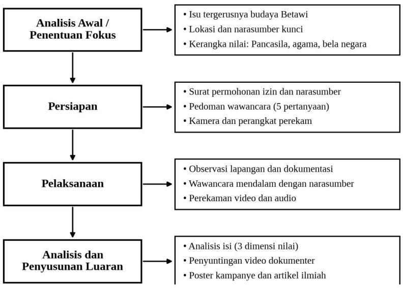

Video dokumenter
Rekaman wawancara dan perjalanan kegiatan di Setu Babakan.
Tautan segeraArtikel PjBL · Kelompok 2 (Sam Ratulangi) · Kelas D
Strategi pelestarian budaya Betawi di era globalisasi melalui nilai Pancasila, agama, dan bela negara.
PjBL 2026
Akar Betawi,
Cakrawala Global
Kelompok 2 · Sam Ratulangi
D3 Sistem Informasi
Penelitian ini mengkaji tantangan pelestarian budaya Betawi di tengah globalisasi serta bagaimana nilai Pancasila, nilai agama, dan bela negara nonmiliter tercermin dalam upaya pelestariannya. Dengan pendekatan kualitatif deskriptif dan analisis isi, data dikumpulkan melalui observasi lapangan di kawasan Setu Babakan, Jakarta, wawancara mendalam dengan pegiat pelestari budaya Betawi, Bang Jaka, serta studi pustaka, yang didokumentasikan dalam video dokumenter pendek. Wawancara menunjukkan bahwa pelestarian perlu berpijak pada budaya lokal namun bertindak secara global: budaya luar tidak ditakuti melainkan dipelajari agar unsur lokal dan global dapat digabungkan tanpa meninggalkan pakem tradisional. Pelestarian juga dipandang sebagai pengamalan nilai Pancasila, nilai agama, dan bela negara nonmiliter. Artikel ini menawarkan paradigma pelestarian yang menjaga akar budaya Betawi sembari membuka cakrawala global melalui revitalisasi, digitalisasi, dan diplomasi budaya.
Kata kunci: budaya Betawi · pelestarian budaya · globalisasi · Pancasila · bela negara
Menjaga pakem tradisi sekaligus menghadirkannya lewat revitalisasi, keterlibatan generasi muda di sanggar dan festival, serta dukungan pemerintah dan masyarakat.
Mengamalkan Sila Ketiga sebagai perekat identitas dan persatuan, serta Sila Kelima agar warisan budaya dapat diakses dan dihargai secara adil.
Menempatkan budaya sebagai wadah bagi nilai kejujuran, tanggung jawab, kesabaran, dan rasa hormat dalam kehidupan bersama.
"Berpijak pada yang lokal, tetapi bertindak secara global."
Bang Jaka, pegiat budaya Betawi
"Kenal maka sayang."
Bang Jaka, tentang minat generasi muda
Kegiatan menggunakan pendekatan kualitatif deskriptif dengan analisis isi untuk memotret upaya pelestarian budaya Betawi di tengah globalisasi.
Data digabungkan dari observasi lapangan, dokumentasi visual, wawancara mendalam dengan Bang Jaka di Setu Babakan, serta sumber pustaka yang relevan.

Menyiapkan surat izin kegiatan dan permohonan wawancara agar observasi berjalan resmi.
Wawancara lima pertanyaan inti, observasi lapangan, dan perekaman video serta audio.
Analisis deskriptif melalui tiga dimensi, lalu dikemas menjadi dokumenter, poster, dan artikel.
| No | Nama | NIM |
|---|---|---|
| 1 | Ayu Safitri | 2610501106 |
| 2 | Dondy Amru Perwoko | 2610501115 |
| 3 | Keysya January Christy | 2610501120 |
| 4 | Kayla Raisya Putri | 2610501112 |
| 5 | Mahdiya Farha Imani | 2610501131 |
| 6 | Milano Arrafi Islam | 2610501125 |
| 7 | Muhammad Alif Nadhir Fadhilah | 2610501123 |
| 8 | Muhammad Fahrizal | 2610501119 |
| 9 | Muhammad Iqfal Gusdian | 2610501135 |
| 10 | Ryanti Anggriani | 2610501130 |
Dosen pembimbing: Fajar Setyaning Dwi Putra, M.Pd · Khozinatun Masfufah, S.Pd.I, M.A · Ir. Yuliana Yuli Wahyuningsih, M.M., M.H.
Artikel tersedia dalam format PDF dan versi teks. Gunakan metadata sitasi agar artikel ini mudah dikutip dalam karya lain.
@article{safitri2026akarbetawi,
title = {Akar Betawi, Cakrawala Global: Strategi Pelestarian Budaya Betawi
di Era Globalisasi melalui Nilai Pancasila, Agama, dan Bela Negara},
author = {Safitri, Ayu and Perwoko, Dondy Amru and Christy, Keysya January
and Putri, Kayla Raisya and Imani, Mahdiya Farha and Islam, Milano Arrafi
and Fadhilah, Muhammad Alif Nadhir and Fahrizal, Muhammad
and Gusdian, Muhammad Iqfal and Anggriani, Ryanti},
year = {2026},
note = {Artikel Project-Based Learning, D3 Sistem Informasi, UPN Veteran Jakarta},
url = {https://akar-betawi-d3si-kelompok2-kelasd.vercel.app/}
}
Rekaman wawancara dan perjalanan kegiatan di Setu Babakan.
Tautan segeraKonten pendek seputar budaya Betawi dan proses proyek.
Tautan segeraAjakan bangga dan peduli terhadap budaya sendiri.
Dalam proses